知识平台操作手册
适用版本：2026-11-13（截图取自当日实际运行的系统，项目"案例演示 · 平台规则知识图谱"）。工作台地址：http://127.0.0.1:8100/。系统怎么装、怎么启动、怎么维护，见配套的服务启动及运维手册；图片、视频和 ZIP 怎么打包上传，深入细节见资料上传与 ZIP 打包操作手册。
这本手册写给第一次使用本系统、不懂技术的人：按"登录 → 建项目 → 传资料 → 看资料 → 出知识 → 查和问 → 日常维护"的真实顺序讲解，每一步都配当前系统实际界面的截图，告诉你点什么、填什么、怎么确认成功、失败了怎么办。
0. 三分钟看懂这个系统
一句话：把资料（文档、图片、PDF、视频）传进来，系统帮你解析成文字、整理成"知识"，然后你可以搜索、提问、看关系图，并且每个答案都能点开看到它来自原文的哪一页、哪一段。
| 你想做的事 | 去哪个菜单 | 需要的角色 |
|---|---|---|
| 上传资料、建知识 | 管理资料 → 资料库 | 管理员 |
| 看资料原文、OCR 结果 | 管理资料 → 资料库 | 管理员 |
| 整理知识的"类型"结构 | 管理资料 → 本体建模层 | 管理员 |
| 查看、修改每条知识 | 管理资料 → 知识台账 | 管理员 |
| 搜索知识、看关系图 | 使用知识 → 检索与图谱 | 所有角色（含只读） |
| 向系统提问 | 使用知识 → 知识问答 | 所有角色（含只读） |
| 看一个实体的关系网 | 使用知识 → 实体脑图 | 所有角色（含只读） |
| 看处理进度、建索引、备份 | 运行与质量 → 构建与任务 | 管理员 |
| 测抽取质量 | 运行与质量 → 质量评测 | 管理员 |
| 建项目、管账号 | 管理 → 项目管理 / 人员管理 | 管理员 |
| 配置大模型 | 管理 → 模型管理 | 超级管理员 |
角色一共三档：超级管理员（系统之根，能配模型）、管理员（上传、建模、审核、管普通账号）、只读用户（只能检索、问答、看脑图，看不到管理类菜单）。
资料变成知识的全过程（知道流程，出了问题才知道卡在哪一步）：
上传文件/ZIP → 解析(文字/PDF/Word) → 图片OCR / 视频ASR → 切片(分段)
→ 按所选模式抽取 → 候选(待审核) → 本体审核 + 事实确认 → 正式知识
→ 建索引(Milvus) → 检索 / 问答 / 图谱重要观念："处理完成"≠"能搜到"。资料处理完只是第一步；项目第一次需要管理员显式构建索引后，语义/混合检索才可用。同理，"仅文档检索"模式只出文字不出实体，图谱里没有节点是正常的。
1. 登录和第一次进入
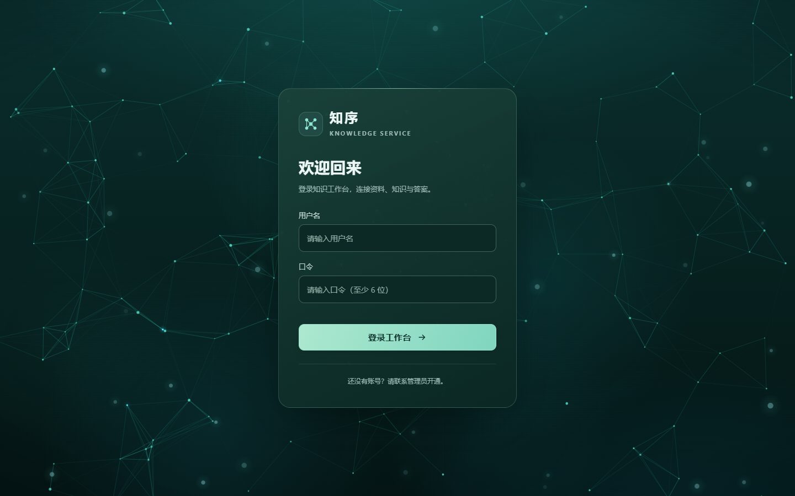
- 浏览器打开
http://127.0.0.1:8100/，进入登录页"欢迎回来"。 - 输入用户名和口令。系统第一次部署时自动创建的初始账号是
admin，默认口令admin123（启动日志会反复提醒你尽快修改）。 - 点"登录工作台"。登录成功后进入工作台，默认停在"检索与图谱"页。左侧是你的菜单，左上角是当前知识项目选择器。
登录后第一件事：改掉默认口令。管理员在「管理 → 人员管理」里可以修改任何账号的口令和角色。页面底部写着"还没有账号？请联系管理员开通"——本系统不开放自助注册。
注意：口令错误会有明确提示；如果所有人都登不上，联系维护人员检查服务是否启动（见运维手册的"状态检查"）。
2. 界面导览：每个区域是干什么的
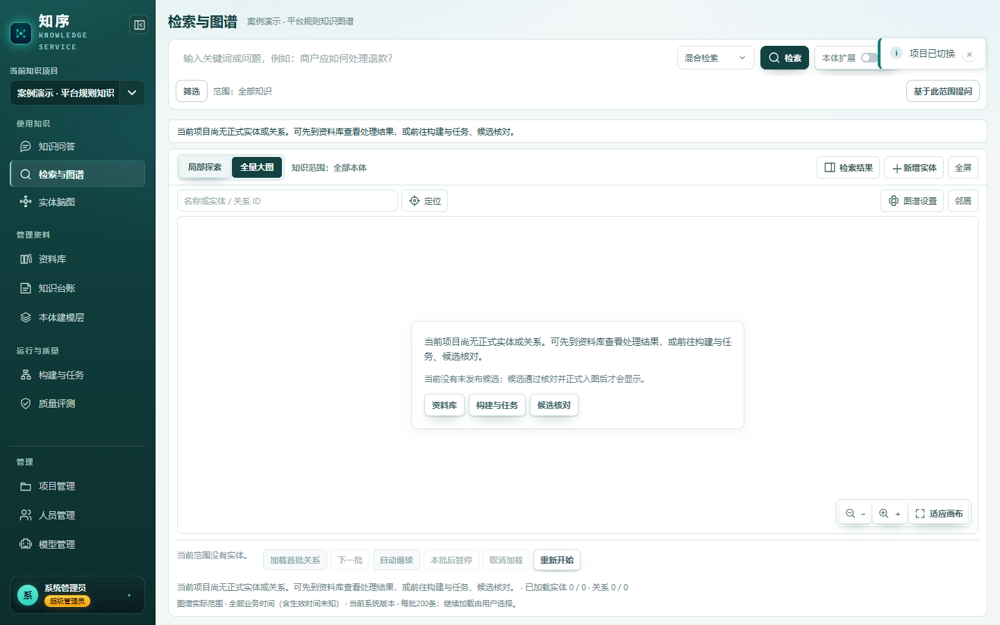
整个工作台分四块：
- 左侧菜单按用途分四组：使用知识（知识问答、检索与图谱、实体脑图）、管理资料（资料库、知识台账、本体建模层）、运行与质量（构建与任务、质量评测）、管理（项目管理、人员管理、模型管理）。只读用户只能看到"使用知识"组，管理类菜单不显示。
- 左上角"当前知识项目"下拉框：所有操作都在某个项目内进行，切换项目后页面数据跟着切换；标题右侧会提示"项目已切换"。
- "筛选"按钮：给当前页设置范围（平台、业务、适用对象、业务时间等）。资料库和知识台账的筛选入口与操作按钮同排，知识问答的筛选入口位于页面标题栏。各页独立保存范围；切换页面后，在目标页检查并应用所需条件。
- 顶部标题下的状态条：操作的成功/失败提示都出现在这里，做完操作先看它。右上角徽章"双时态 · 项目本体 · 来源追踪"概括了系统的三个核心能力。
3. 新建一个项目
知识按项目隔离：不同业务线、不同资料集建议分项目存放。
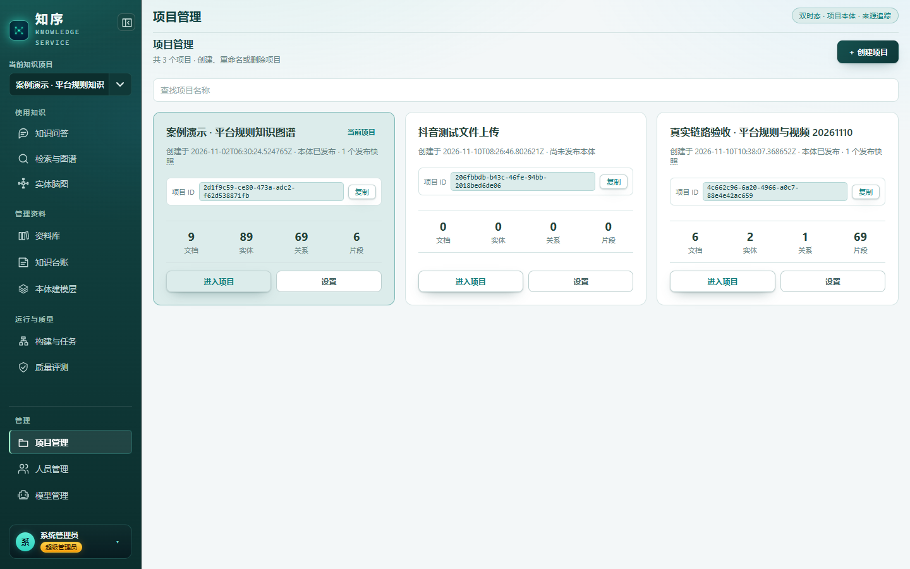
- 进入「管理 → 项目管理」。
- 填写项目名称（必填）和说明（选填），点击创建。
- 回到任意页面，在左上角"当前知识项目"里选中新项目，之后所有上传、检索都在这个项目里。
- 项目卡片上可以看到项目概览和操作入口；重命名、删除也在项目卡片上操作。删除项目会连带删除它的知识，操作前想清楚。
新项目是空的：还没有本体（知识类型的目录）。第一次建议用"开放发现"模式上传一小份资料，让系统先给你攒候选（见第 4、8、9 章）。
4. 上传资料（核心操作，三步走）
入口：进入「管理资料 → 资料库」，点右上角「添加文件」。
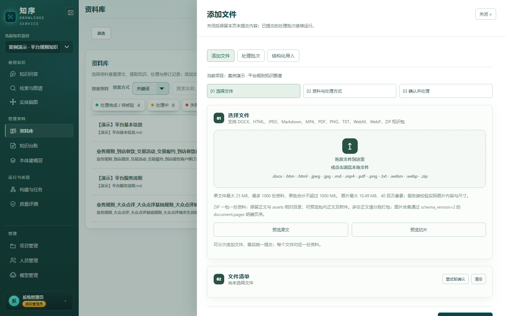
上传页按三个编号区组织操作：01 选择文件 → 02 文件清单 → 03 处理选项。
01 选择文件。 把文件拖进上传区（写着"拖放文件到这里 / 或点击浏览本地文件"），或点击选择本地文件。页面会显示支持格式和"单文件 25 MB"的大小提示。可以分多次追加，最后统一提交；每个独立文件或一个 ZIP 对应一份资料。
| 手里的资料 | 怎么传 | 系统会做什么 |
|---|---|---|
| TXT、Markdown | 直接选文件 | 读取正文，生成切片 |
| 直接选文件 | 提取原生文字和表格；扫描页走 OCR；原件保留可下载 | |
| Word（.docx） | 直接选文件 | 解析正文表格，内嵌图片自动取出做 OCR |
| HTML | 直接选文件 | 解析网页文档 |
| 图片、长截图 | 直接选 .png/.jpg/.jpeg/.webp | 保留原图；正式处理时 OCR；长图自动分块识别，仍算一份资料 |
| 视频 | 直接选 .mp4/.webm | 保留原件供播放；正式处理时把语音转成文字（不做画面 OCR） |
| 一份文档 + 图片/视频附件 | 打成一个 ZIP | 建立一份资料，附件归属该资料 |
| 同一规则的多张连续截图 | ZIP 清单里用 pages 指定顺序 | 建立一份按页排序的图片资料 |
在 01 区可以点「预览原文」核对正文、表格、图片和视频，点「预览切片」看文字分段。预览不跑 OCR/ASR，所以图片和视频这时还没有文字，属正常。
02 文件清单。 显示已选文件、数量和状态；失败的可以"重试失败"，也可以"清空"重选。发现少传了文件，回到 01 继续追加即可，已选队列保留。
03 处理选项。 填写自定义标题（单文件选填）、适用平台/业务/对象（每项可选"暂不确定 / 指定范围 / 全部适用"）、时间信息，并选择处理模式。随后点提交开始处理。
三种处理模式怎么选：
| 处理模式 | 什么时候选 | 出来什么 |
|---|---|---|
| 仅文档检索 | 只想把资料存下来、能搜、能看 | 正文和切片，能检索；不产生实体关系 |
| 开放发现 | 第一次梳理一类新资料，还不知道有什么类型 | 类型候选 + 事实候选，等你在第 8、9 章审核 |
| 使用项目本体 | 项目已有正式本体，按它继续抽取 | 按已发布类型抽取的实体和关系 |
大小限制速记（超了会被拒绝，页面提示为准）：单个文件或 ZIP ≤ 25 MB；单张图片 ≤ 10 MiB 且 ≤ 4000 万像素；一份资料的图片最多 200 张、共 100 MiB；一个批次最多 1000 份资料、1 GB；视频 ≤ 10 分钟且 ≤ 25 MB；GIF 等动画图要先导出成静态图。
5. 看进度：处理批次和失败恢复
提交后到「运行与质量 → 构建与任务 → 后台任务」看每份资料的进度。
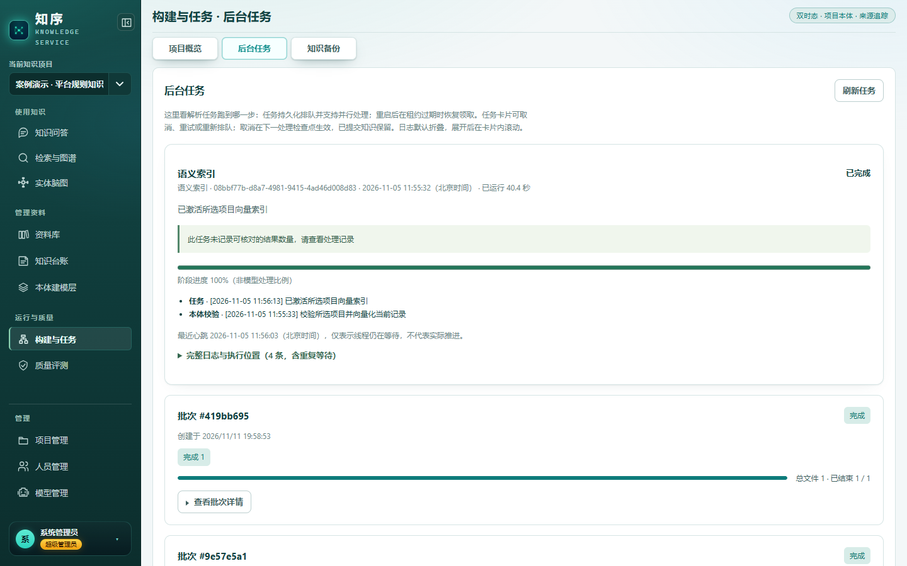
- 逐份资料看状态：排队、解析、OCR/ASR、切片、抽取各阶段，完成、失败一目了然；日志默认折叠，展开后在卡片内滚动。
- 失败的资料点开看错误信息和失败在哪一步：认证/模型问题找管理员；文件损坏就修文件；OCR 识别质量差先核对原图清晰度。
- 恢复方式按需选：从断点继续（成功部分保留，只补后面的）、只重试失败切片、整份重新处理（模型或规则变过时用）。
- 任务可以取消、重试、重新排队；取消在检查点生效，已经写进去的知识不会丢。服务重启后，持久任务会按租约机制自动恢复领取。
6. 资料库：找到资料、搜索、重新处理
进入「管理资料 → 资料库」。左侧是资料列表，每条显示名称、处理状态、格式、字数与派生知识数量；点击一条，右侧打开详情抽屉。
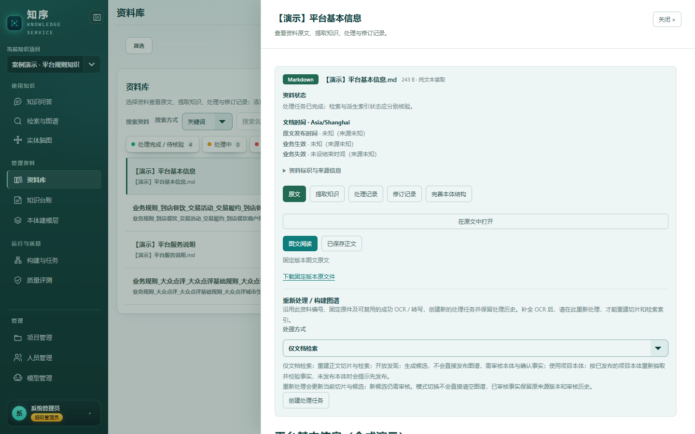
详情抽屉里看四块内容：原文（图文阅读）、提取知识（这份资料抽出了哪些事实）、处理记录（每一步的执行历史）、修订记录（这份资料本身的版本变化）。抽屉里还有「在原文中打开」（进入固定版本阅读器，见第 7 章）和「重新处理 / 构建图谱」。
在资料库里搜索：
- 搜索方式两种：关键词（按字面匹配资料名称、原文件名和已保存正文，不需要任何模型）和向量正文（按语义找相关正文片段，适合用一句话描述来找；需要项目已建索引）。
- 在结果中继续检索：搜完一次后可以继续叠加条件（每步都能分别选关键词或向量，最多八步），用来在同一份资料的不同位置逐步缩小范围；"退回上一步"撤销最后一个条件。
- 向量搜索依赖向量模型、Milvus 和项目索引；缺了会明确报错，不会偷偷换成关键词。没建索引先看第 14 章。
重新处理（不用重新上传）：

资料详情里有「重新处理 / 构建图谱」。选一种方式后点「创建处理任务」，系统复用已上传的原始文件，生成新一次处理并保留历史。三种方式：
| 方式 | 本次做什么 |
|---|---|
| 仅文档检索 | 重新生成正文切片、更新检索，不抽实体关系 |
| 开放发现 | 产生候选，等审核（第 8、9 章） |
| 使用项目本体 | 按已发布本体重新抽取并校验 |
注意：解析视图里的"重试 OCR"只更新那张图的识别结果；要让新文字进入检索或图谱，必须回到这里做整份重新处理。
7. 阅读原文：固定版本、图文、解析视图
在资料详情点「在原文中打开」，进入固定版本原文阅读器。
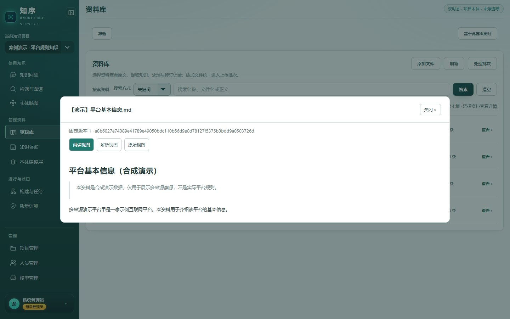
- 阅读视图：正文、表格、图片按原顺序展示；图片可放大、按宽阅读、看原始比例；视频直接播放。
- 解析视图：看 OCR 文字框、置信度、长图分块进度、视频转写时间段；识别质量差可以在这里单项重试。
- 原始视图：只读查看或下载固定版本原文件（原件、原 ZIP），下载内容与当初上传的完全一致。
不同资料类型的看点：
- PDF：阅读器用本地渲染的分页图片显示原版页面，可上一页/下一页、输入页码；来源区域高亮；精细核对就下载原 PDF。不依赖浏览器 PDF 插件。
- 长图：点击 OCR 出来的文字，页面自动滚动到原图对应位置并高亮，方便逐条核对；分块失败时保留已识别部分，并提示覆盖不完整。
- 视频：播放原件；点击转写时间段跳到对应画面。只转语音，画面里的字幕不会被识别。
"已保存正文"是系统实际用于切片和检索的文字（含 OCR/ASR 补进去的内容），和原文件排版不完全一样，属正常。
8. 从资料到知识：候选与审核
用"开放发现"或"使用项目本体"模式处理资料后，会得到候选。候选还不是正式知识，必须审核：
- 结构候选（新类型、新关系）：在资料详情的"完善本体结构"抽屉或「本体建模层」里核对。可以先预演看影响（预演只读、不写库），确认没问题再"加入本轮修改"进草案；如果类型其实已经存在，选"仅复用正式术语"直接写事实，不必建草案。
- 事实候选（某个实体有什么属性、谁和谁有什么关系）：在知识台账点「知识审核」逐条确认或驳回，通过后写入正式知识并记录来源。
- 审核通过的事实可以在"提取知识"和台账里看到，每条都带来源断言（来自哪份资料、哪个片段）。
观念：预演 ≠ 保存；"加入草案"也只是进了本轮修改，还要走第 9 章的审核发布，才成为正式结构。
9. 本体建模层：定义知识的类型
"本体"就是知识的类型目录：有哪些实体类型（商户、平台、商品）、类型之间什么关系（商户入驻平台）、各有什么属性。进入「管理资料 → 本体建模层」。
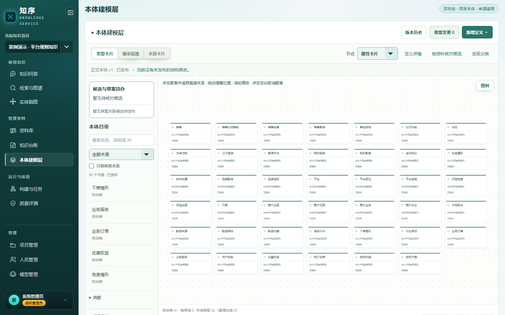
当前这个项目已发布正式本体 v1，共 83 个术语。界面分三块：
- 左侧：候选待办面板 + 本体目录（可按术语检索、筛选）；顶部可切换 类型卡片 / 继承层级 / 术语卡片 / 属性卡片 四种视图。
- 中间画布：图形化展示类型之间的继承和关系，可拖动、缩放。
- 右侧/检查器：编辑当前选中术语的名称、说明、父类、属性约束等。
常用按钮：新增定义（新建类型/关系/属性）、定义详情、发现父类（系统建议上下级）、版本历史。
新建一个类型： 点"新增定义" → 填名称（建议中文，系统会自动生成唯一标识 IRI）→ 选父类（可不选）→ 加属性和说明 → 保存。所有改动先进工作草案（顶部显示"草案变更 N"）。
发布： 草案攒齐一轮修改后，先"校验"（检查重名、循环、约束问题），再提交审核，逐项批准后发布成正式版本。发布后新知识才能按这套类型写入。版本管理里可以看到每次发布的记录；历史版本只读。
类型重复或不合适时：
| 情况 | 操作 |
|---|---|
| 只是名称写得不好 | 编辑术语名称和说明再发布，实例身份不变 |
| 个别实体分错类型 | 在台账里编辑那条实体，产生新修订 |
| 两个类型其实是同一个 | 类型详情 → "合并到已有类型"：预览影响 → 加入草案 → 审核发布 → 发布后"受控重分类"把旧知识迁移过来 |
| 类型不再用 | 术语详情 → "停用这个术语"，可选替代术语；实体和历史保留不删 |
类型合并停的是类型，不等于把两个具体的人/物合并；实体级的合并看第 10 章。
10. 知识台账：每一条知识在这里
进入「管理资料 → 知识台账」。
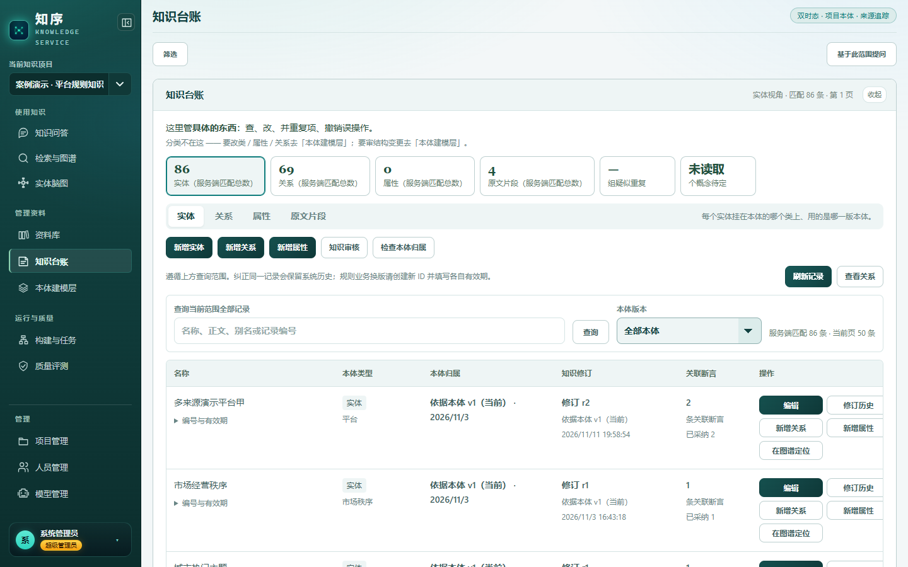
- 顶部四视角页签：实体、关系、属性、原文片段。每个视角按对应列展示（名称/本体类型/本体归属/知识修订/关联断言/操作等）。
- 顶部统计：当前范围匹配的实体、关系、属性、原文片段数量（本示例：实体 86、关系 69、属性 0、原文片段 4）。
- 点"刷新记录"重新查询；上方筛选可限定范围。
- 点开一条记录：看它的属性、来源、版本历史；"编辑"修改后保存会生成新修订——系统不覆盖旧值，历史永远可查。
- 软删除：给记录打删除标记（含它派生的知识），保留历史、可恢复，不是物理删除。
维护入口（台账顶部）：新增实体 / 新增关系 / 新增属性、知识审核（处理待审事实）、检查本体归属（看哪些知识还挂在旧本体版本上）。
手动新增实体（不经上传抽取，直接写）：
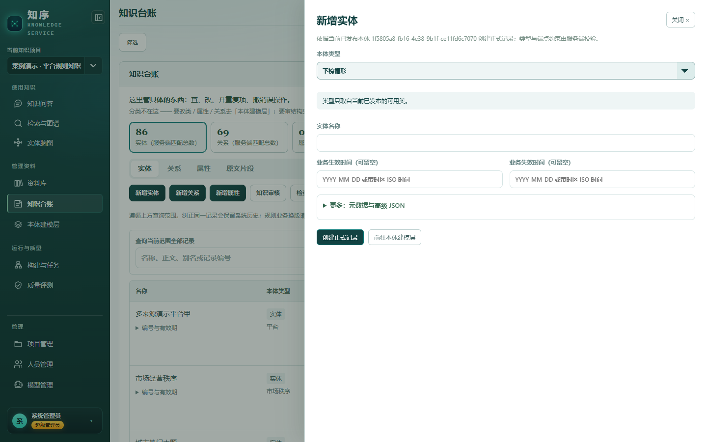
- 点"新增实体" → 在弹窗里选本体类型（类型只取自当前已发布的可用类）→ 填实体名称、业务生效/失效时间（可留空）→ 需要时展开"更多：元数据与高级 JSON"。
- 点"创建正式记录"立即成为正式知识；若当前没有合适的类型，点"前往本体建模层"先去建类型。
- 新增关系同理：选关系类型 → 选两端实体 → 保存。手动新增同样走校验：类型必须是已发布的。
实体消歧与融合（同一个商户被抽成两条记录时）：在台账的治理操作区输入名称"查重"，确认后填"保留实体 ID"和"待合并 ID"执行合并，可加别名；"看可撤销的操作"里可以撤销。合并的是两个实例的身份，和类型合并不是一回事。
11. 检索与证据
进入「使用知识 → 检索与图谱」。
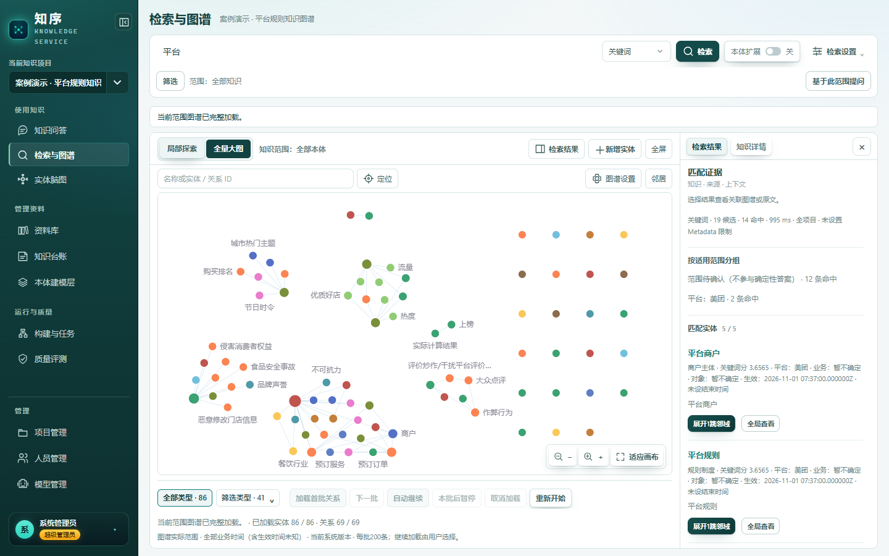
- 输入关键词或问题，选检索方式：关键词（精确匹配）、语义向量（按意思找）、混合检索（两者结合，默认）。
- 结果出现在"匹配证据"面板：先给统计（例如"19 条候选 · 14 条命中 · 995ms"），再按范围分组，然后逐条列出命中的实体/关系，带类型、关键词分、平台、生效时间等信息。
- 本体扩展开关：打开后，搜实体名会顺带召回它所属类型的相关内容（比如搜"某商户"也带出"入驻平台"的规则），只是多召回，不改变范围。
- 点结果里的来源，可以直接跳到原文对应位置核验。
- 语义/混合检索需要项目索引就绪；没建过索引（状态条提示"项目向量索引不可用: requires_rebuild"），管理员在"检索设置"里点构建语义索引（只需首次，之后自动增量同步）。
12. 图谱和实体脑图
交互图谱（检索与图谱页右侧）：选一个实体，设"扩展跳数"，点"展开所选节点"画局部关系图；图谱设置里可以限定只看某些实体类型/关系类型、开关标签显示。拖动、滚轮缩放、双击空白适应画布；点节点或连线在右侧详情栏看来源、版本、有效期。
全量大图：项目知识多时切换全图，系统渐进加载（先显示一部分，可暂停/继续），避免一次画完卡死。
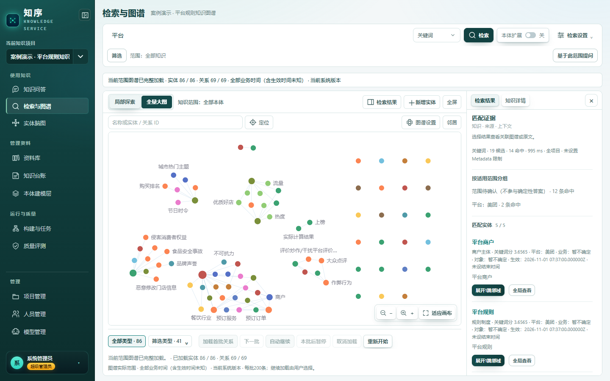
实体脑图（「使用知识 → 实体脑图」）：选一个"根实体"，设展开深度（0–5），生成以它为中心的关系脑图。
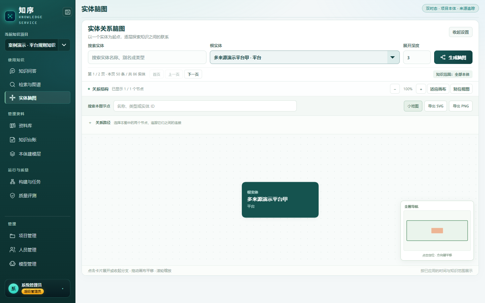
可以搜索本图节点、用小地图定位、追踪两个节点之间的关系路径、导出 SVG/PNG。适合做汇报材料。
13. 知识问答
进入「使用知识 → 知识问答」。
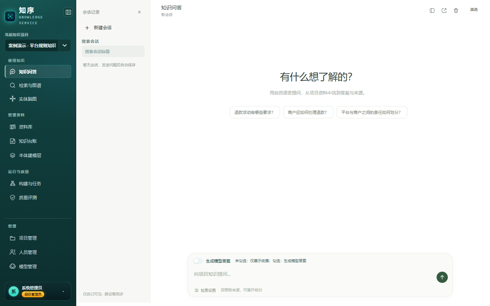
- 左侧"会话记录"：可以新建会话、搜索会话；会话仅自己可见、跨设备同步；也可以导入本机旧记录。
- 直接输入问题提问。回答会附带证据引用：引用了哪些知识条目和原文片段。
- 核验答案：点开引用，看原文出处、时间范围。系统只在有有效依据时作答，依据不足会明确说"无法回答"，不会编。
- 在知识问答页面标题栏点"筛选"，设置并应用本页范围，下一题只在这个范围里找依据。问答与资料库、检索、台账各自保存筛选；切换页面不会自动带入其他页的条件。已有回答保留生成时的范围。
- 生成回答需要已配置大模型（见第 16 章和运维手册）；检索本身不依赖大模型。
14. 构建与任务、质量评测
构建与任务（运行与质量）：
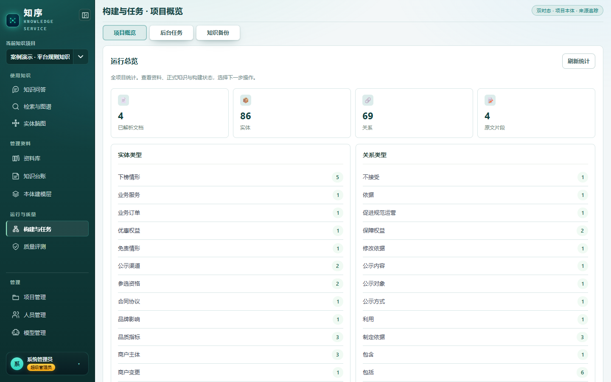
- 项目概览：已解析文档、实体、关系、原文片段统计卡片，以及实体类型、关系类型列表，一眼看清项目规模。
- 后台任务：所有批处理任务（解析、抽取、索引、同步）的状态、日志（第 5 章）；可取消/重试/重新排队。
- 知识备份：见第 15 章。
质量评测（运行与质量）：
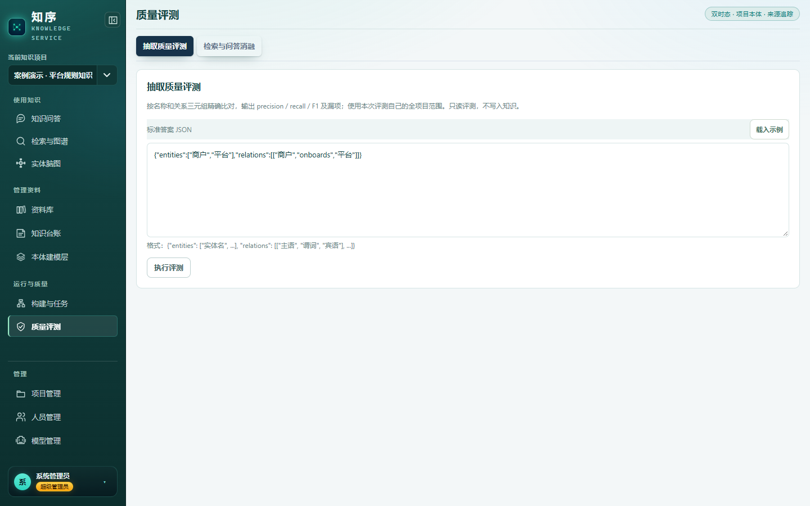
- 抽取质量评测：准备一份"标准答案" JSON（实体名列表 + 关系三元组），执行后得到 precision / recall / F1 和漏项清单，用来量化抽取质量。只读操作，不改数据。
- 想深入研究"图关系、本体辅助有没有用"，用"检索与问答消融"做对照实验（高级用法，按界面提示配置固定题集即可）。
15. 备份与导出
在「构建与任务 → 知识备份」或项目设置里：
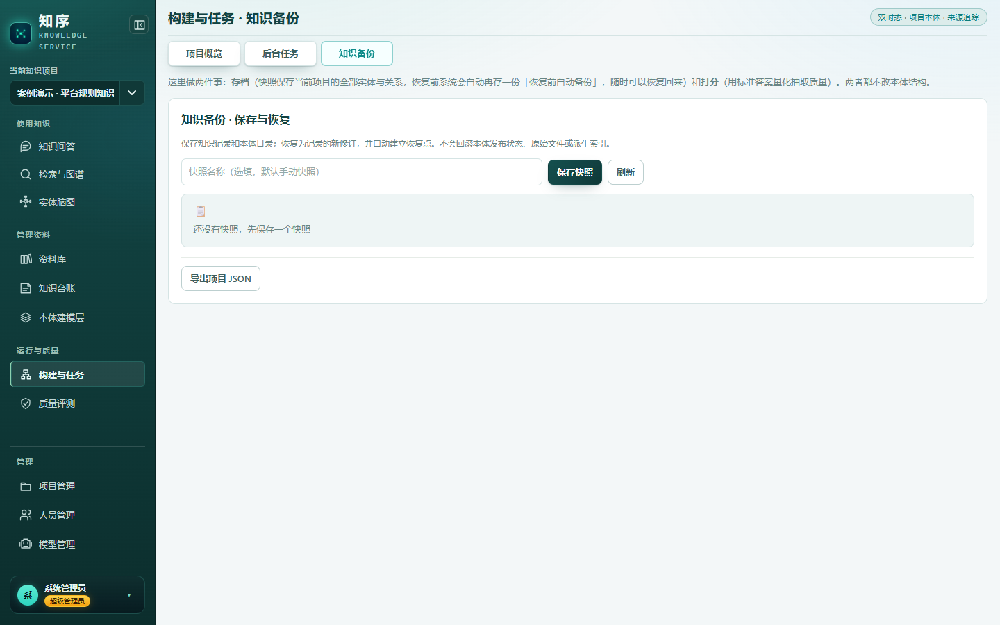
- 填名称，点保存快照：保存当前项目的全部知识记录。
- 恢复：选一个快照确认恢复；系统会先自动建一份"恢复前自动备份"，再把快照内容恢复成新的修订，历史不丢。
- 导出项目 JSON：把项目知识导出成文件离线留存。导出内容以实际清单为准，不包含所有原始文件和运行配置。
注意：快照只保知识记录，不包含原始文件、向量索引和 Docker 数据卷；完整备份要按运维手册第 9 章做。
16. 人员管理和模型管理
人员管理（管理 → 人员管理）：
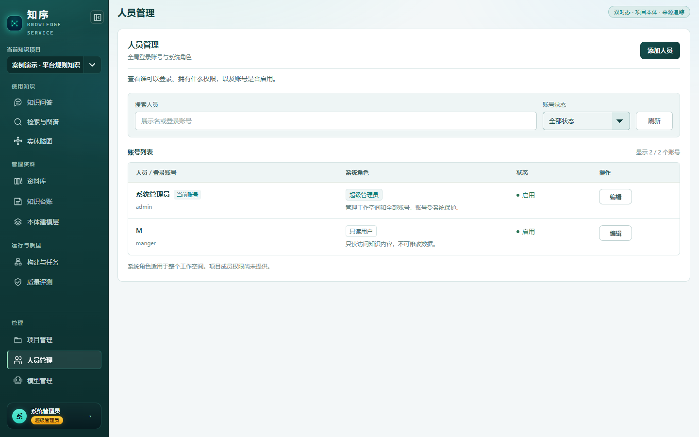
- 创建账号、设置角色（超级管理员/管理员/只读用户）、停用账号、重置口令；可以搜索人员、按状态筛选。
- 每个账号显示名称（如"系统管理员"）、角色（如"只读用户"）、状态（启用）；当前账号有"当前账号"标记。
- 离职或调岗：把账号停用即可，不要删除，历史操作记录需要保留操作人。
模型管理（管理 → 模型管理，仅超级管理员可见）：
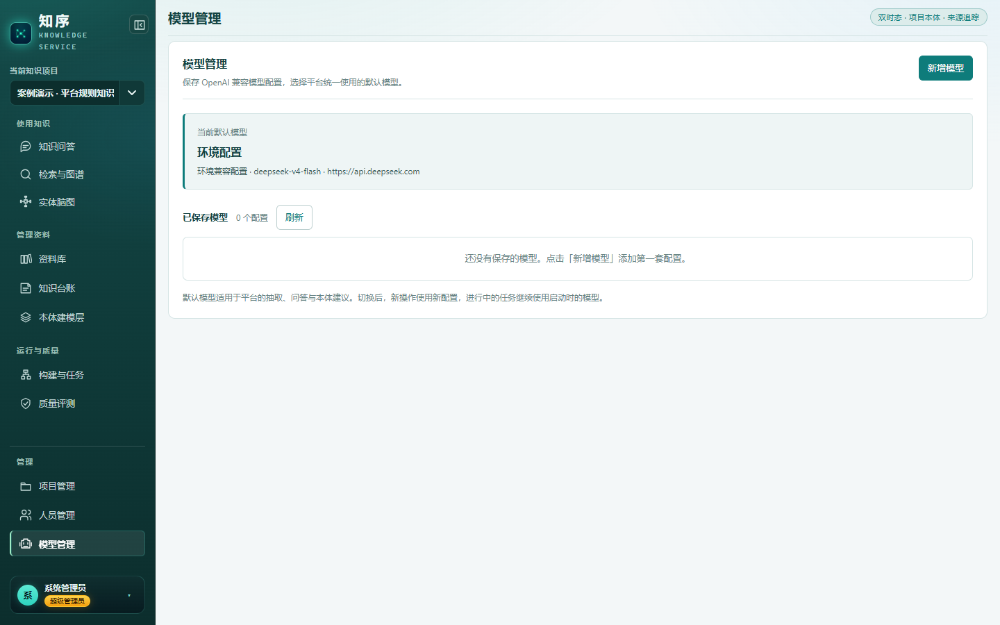
- 点"新增模型"，填配置名称、Base URL、模型名、API key（OpenAI 兼容接口），保存。
- 点测试连接确认能通，再点设为默认。平台的抽取、问答、本体建议都会用当前默认模型。
- 切换默认后，新开始的任务用新模型；正在运行的任务继续用启动时的配置，不会中途串。
- 没在这里配模型时，系统沿用服务器
.env里的 LLM 配置。
17. 常见问题速查
| 现象 | 原因 | 怎么办 |
|---|---|---|
| 登录不上 | 服务没启动 / 账号口令错 | 看运维手册状态检查；找管理员核对口令 |
| 上传被拒：ZIP 必须只包含一份资料 | 包里有多份正文或旧格式清单 | 按上传手册第 2、5 节拆包重传 |
| 图片被拒 | 超 10 MiB / 4000 万像素，或是 GIF 动图 | 导出静态图、压缩后再传 |
| 处理完了，图谱没节点 | 选了"仅文档检索" | 正常；在资料详情用"重新处理/构建图谱"选开放发现或使用项目本体 |
| 状态条提示"项目向量索引不可用: requires_rebuild" | 数据库升级或索引与知识水位不一致，需要重新向量化 | 管理员在检索页"构建语义索引"；等状态条消失后再查 |
| 语义/混合检索报错或没结果 | 项目没建索引 / 模型或 Milvus 不可用 | 先"构建语义索引"；仍失败看运维手册排错 |
| 向量搜索资料库里没有某份资料 | 该资料未索引或还没有可检索文字 | 确认处理完成、索引就绪；图片/视频要正式处理后才出文字 |
| 问答说无法回答 | 范围里没有有效依据 | 核对筛选范围、时间；这是如实作答，不是故障 |
| 编辑保存时提示冲突（409） | 别人（或你另开的窗口）先改了 | 刷新看最新版本，重新编辑后保存 |
| 视频能放但没有转写 | ASR 模型/FFmpeg 未就绪或视频无语音 | 看运维手册模型准备章节 |
| 长图显示"部分完成" | 有分块 OCR 失败 | 在解析视图重试；补全后整份重新处理 |
| 找不到某条知识 | 筛选范围、时间点、候选未审核 | 先清筛选再查；候选要先通过审核 |
| 想撤销刚才的合并/操作 | 融合支持撤销 | 台账"看可撤销的操作"里执行 |
18. 术语小词典
| 词 | 白话解释 |
|---|---|
| 资料（来源） | 你上传的一份文件或 ZIP；系统给它固定版本，原文永远可追溯 |
| 切片 | 正文按规则切成的分段，检索的最小单位 |
| 候选 | 系统抽取出来、等你审核的结果；审核通过前不算正式知识 |
| 本体 | 知识的类型目录：类型、关系、属性的定义集 |
| 术语 / IRI | 一个类型在系统里的正式名称和唯一编号 |
| 草案 | 一轮本体修改的草稿，审核发布后才生效 |
| 事实 / 断言 | 一条正式知识（某实体的属性或两个实体的关系）及其来源声明 |
| 修订（rN） | 一条记录的第 N 个版本；系统从不覆盖历史 |
| 软删除 | 打删除标记、保留历史、可恢复 |
| Metadata | 资料上的业务标签（平台、业务、适用对象等），用于筛选 |
| 业务时间 / 系统历史 | 业务时间 = 规则本身的有效期；系统历史 = 记录何时写入 |
| 索引（Milvus） | 支撑语义检索的向量库；项目首次需显式构建 |
| 快照 | 项目知识在某一刻的备份，恢复时生成新修订 |
> AI生成